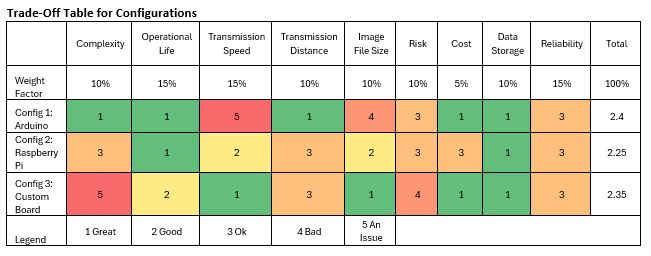

Tradeoff Analysis
To create the three concept choices, the complexity, weaknesses, and strengths of each logic board were considered. For example, the Arduino is incapable of multitasking which would make it exceptionally difficult to have an active control system that requires constant inputs and adjustments. With the already lower power consumption of the Arduino, it was opted to neglect solar panels as it would be easy to have a battery bank capable of supplying power for the entire mission. With the limited processing power of the Arduino, it was opted for this configuration to have passive control systems. Since the configuration does not need solar panels, it was opted to try and make the design aero stabilized using passive fins/rudders.
The second configuration is based around using a Raspberry Pi. The Raspberry Pi is capable of multitasking and therefore the concept based on it uses active control as it would be the most capable of running the code to correct the orientation and yield the most accurate photos. This design also utilizes solar panels as well as a larger battery bank. The larger battery bank and solar array is required to help power the higher power consumption processor as well as the motors required for the control system.
The last configuration to be considered was one based on custom chips and boards that would have to be soldiered together. This concept is the most complex but has the possibility to be the most customizable. With the preliminary research done into the components required, it does seem doable but would have a rather tight time frame. To keep the board design as simple as possible, it was elected to use passive control. Since this configuration will have a lower power draw as a result, it will run off a smaller battery bank and a small solar array. This should yield the longest potential mission time.
